Prepare Data
# devtools::install_github("derekmichaelwright/agData")
library(agData) # Loads: tidyverse, ggpubr, ggbeeswarm, ggrepel
# Prep data
ages <- c("Under 25 years", "25-44 years", "45-64 years", "65-74 years", "75-84 years", "85 years and older")
pp <- read.csv("usa_population.csv") %>%
select(Area, Population=X2019) %>%
mutate(Population = as.numeric(gsub(",","",Population)))
dd <- read.csv("usa_deaths_data.csv") %>%
rename(Area=1, Date=Week.Ending.Date) %>%
mutate(Date = as.Date(Date, format = "%m/%d/%Y"),
JulianDate = lubridate::yday(Date),
Age.Group = factor(Age.Group, levels = ages),
Year = as.numeric(substr(Date, 1, 4)),
YearGroup = ifelse(Year<2020, "pre-2020", Year),
YearGroup = factor(YearGroup, levels = c("pre-2020", "2020", "2021")))
Deaths
# Create plotting function
deathPlot1 <- function(area = "United States") {
# Prep data
vv <- as.Date(c("2015-01-01","2016-01-01","2017-01-01",
"2018-01-01","2019-01-01","2020-01-01","2021-01-01"))
xx <- dd %>% filter(Area == area) %>%
group_by(Date) %>%
summarise(Value = sum(Number.of.Deaths))
# Plot
ggplot(xx, aes(x = Date, y = Value)) +
geom_line(color = "darkred", size = 1) +
geom_vline(xintercept = vv, lty = 2, alpha = 0.5) +
scale_x_date(date_breaks = "1 year", date_labels = "%Y", minor_breaks = "1 year") +
theme_agData() +
labs(title = area, y = "Weekly Deaths", x = NULL,
caption = "\xa9 www.dblogr.com/ | Data: CDC\n*Recent data may be incomplete")
}
United States
mp <- deathPlot1(area = "United States")
ggsave("usa_deaths_1_01.png", mp, width = 8, height = 4)
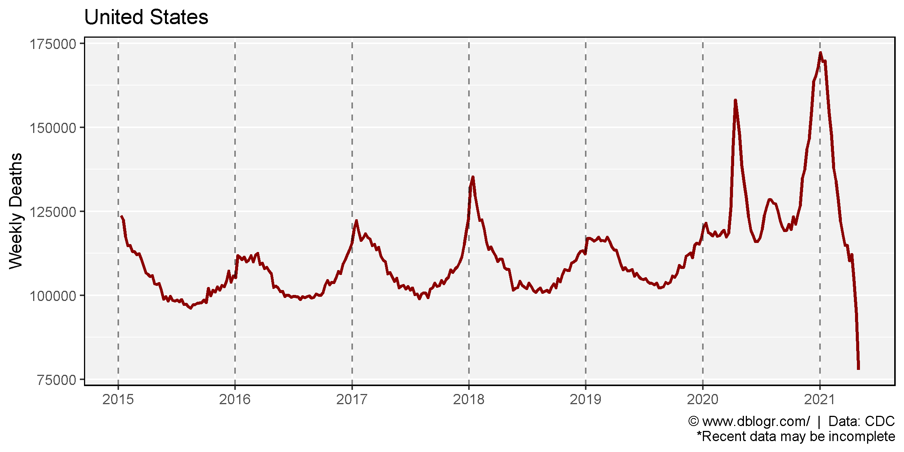
Deaths Vs. Previous Years
# Create plotting function
deathPlot2 <- function(areas = "United States") {
# Prep data
xx <- dd %>% filter(Area %in% areas) %>%
mutate(Area = factor(Area, levels = areas)) %>%
group_by(Area, Year, YearGroup, Date, JulianDate) %>%
summarise(Value = sum(Number.of.Deaths))
# Plot
ggplot(xx, aes(x = JulianDate, y = Value, group = Year, color = YearGroup, alpha = YearGroup)) +
geom_line() +
facet_wrap(Area ~ ., scales = "free_y", ncol = 5) +
scale_color_manual(name = NULL, values = c("darkgreen","darkred", "darkorange")) +
scale_alpha_manual(name = NULL, values = c(0.5,1,1)) +
theme_agData(legend.position = "bottom") +
labs(y = "Deaths Per Week",
caption = "\xa9 www.dblogr.com/ | Data: STATCAN")
}
United States
mp <- deathPlot2(areas = "United States")
ggsave("usa_deaths_2_01.png", mp, width = 6, height = 4)
ggsave("featured.png", mp, width = 6, height = 4)
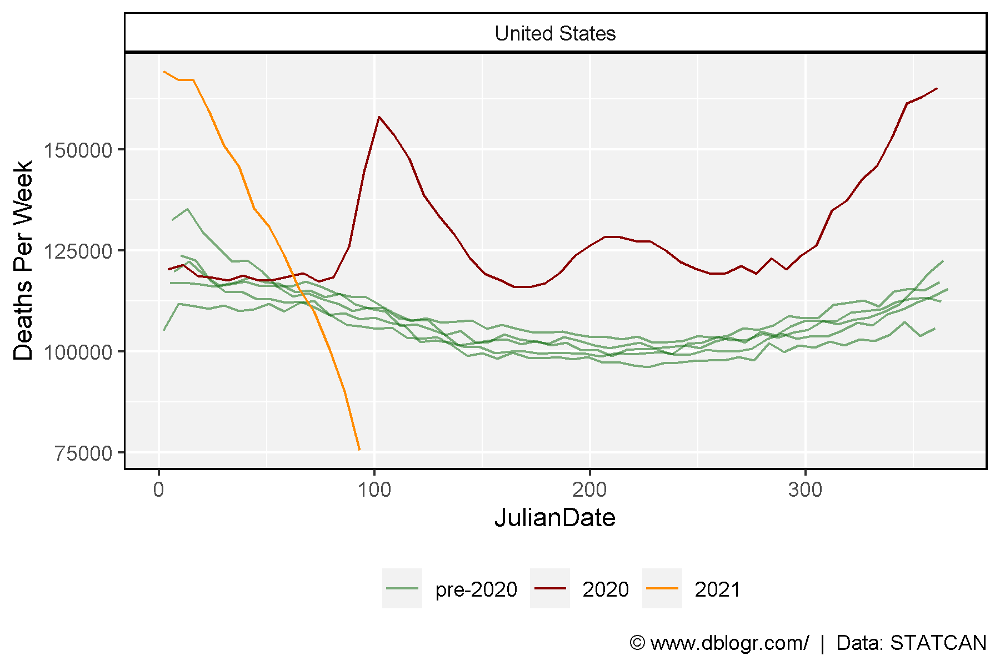
New York
mp <- deathPlot2(areas = "New York")
ggsave("usa_deaths_2_02.png", mp, width = 6, height = 4)
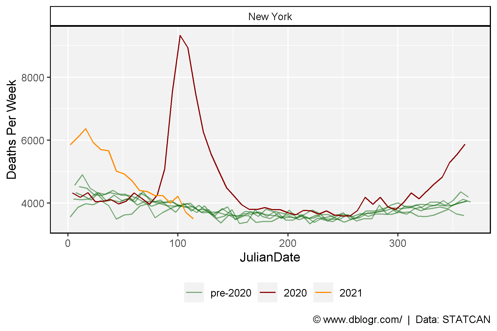
California
mp <- deathPlot2(areas = "California")
ggsave("usa_deaths_2_03.png", mp, width = 6, height = 4)
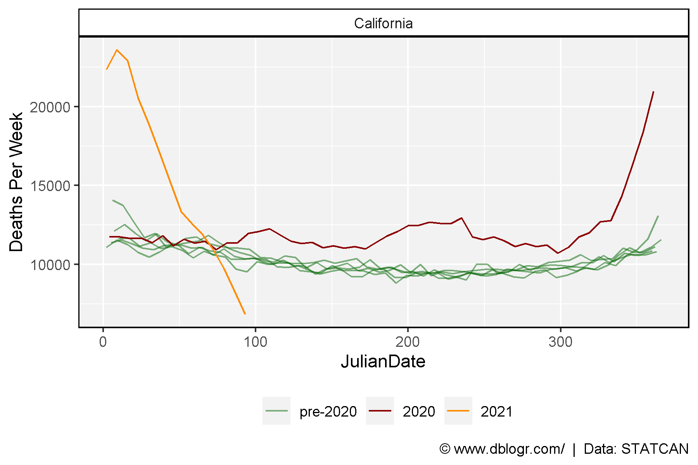
Texas
mp <- deathPlot2(areas = "Texas")
ggsave("usa_deaths_2_04.png", mp, width = 6, height = 4)
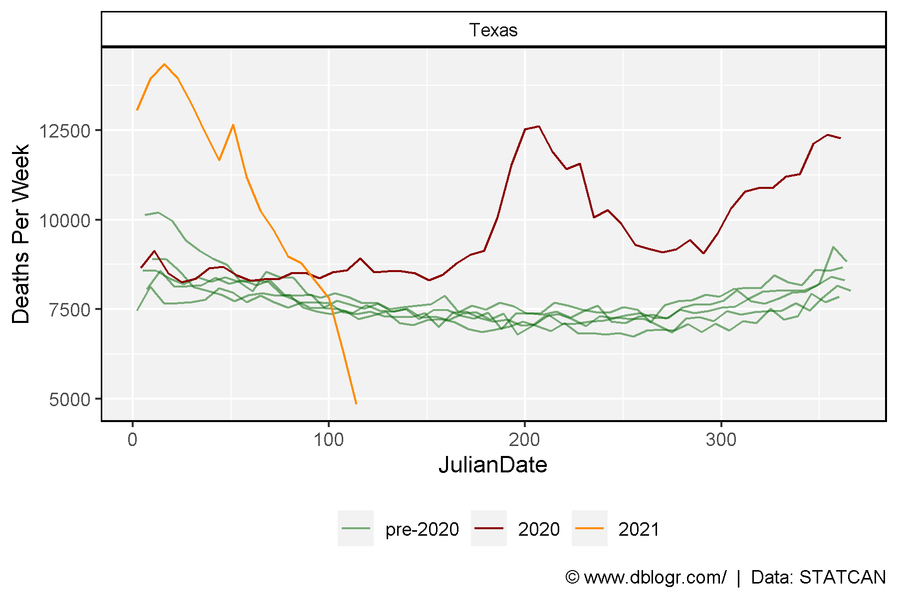
Florida
mp <- deathPlot2(areas = "Florida")
ggsave("usa_deaths_2_05.png", mp, width = 6, height = 4)
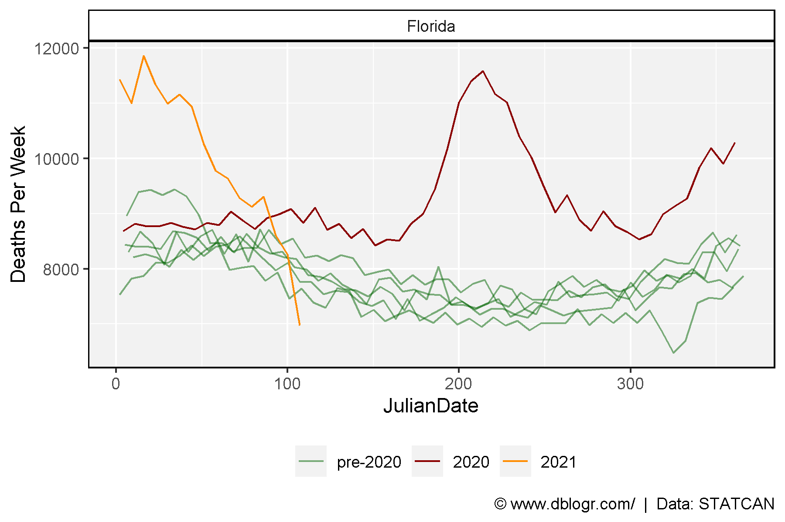
Washington
mp <- deathPlot2(areas = "Washington")
ggsave("usa_deaths_2_06.png", mp, width = 6, height = 4)
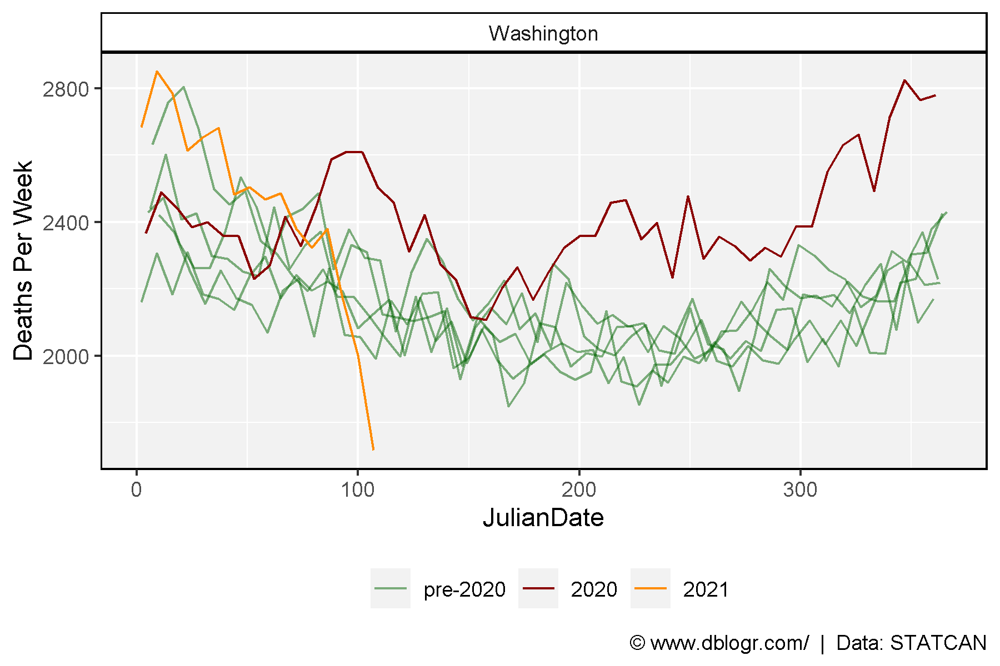
Montana
mp <- deathPlot2(areas = "Montana")
ggsave("usa_deaths_2_07.png", mp, width = 6, height = 4)
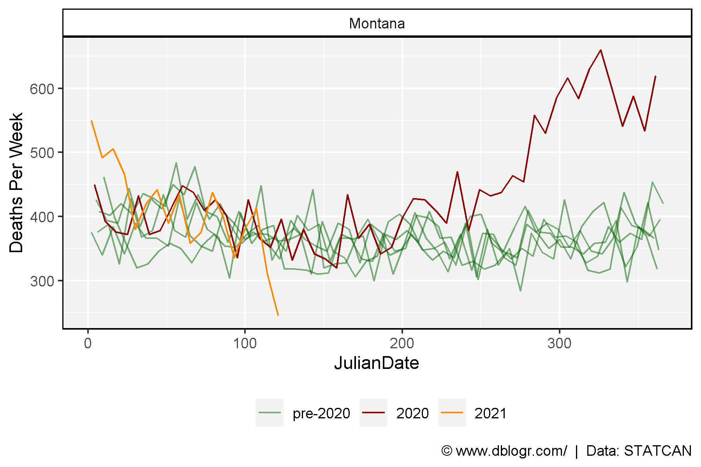
North Dakota
mp <- deathPlot2(areas = "North Dakota")
ggsave("usa_deaths_2_08.png", mp, width = 6, height = 4)
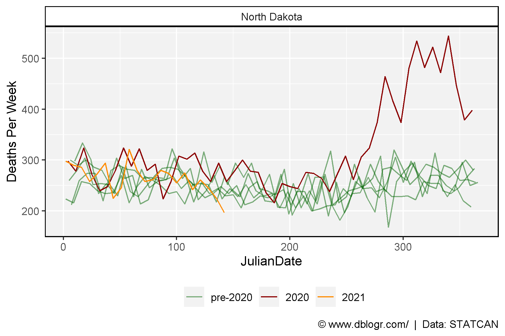
South Dakota
mp <- deathPlot2(areas = "South Dakota")
ggsave("usa_deaths_2_09.png", mp, width = 6, height = 4)
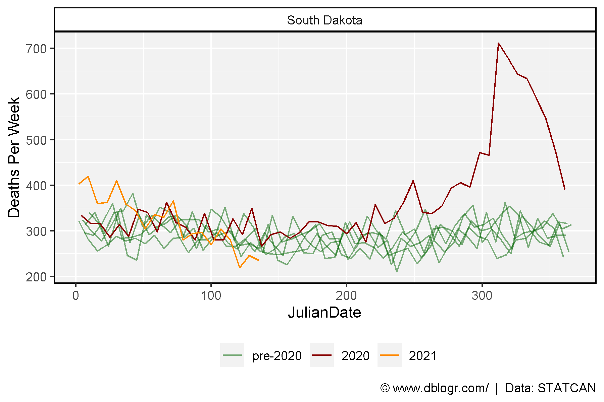
Selected States
mp <- deathPlot2(areas = c("New York", "Texas", "Montana"))
ggsave("usa_deaths_2_10.png", mp, width = 12, height = 4)
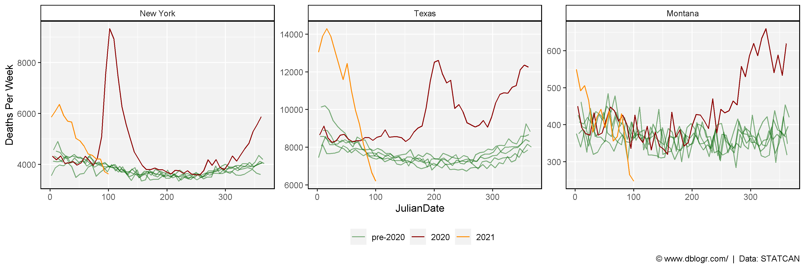
Deaths by Age Group
# Plotting function
deathPlot3 <- function(area) {
xx <- dd %>%
filter(Type == "Unweighted", Area == area)
# Plot
ggplot(xx, aes(x = JulianDate, y = Number.of.Deaths)) +
geom_line(aes(group = Year, color = YearGroup)) +
facet_grid(Area ~ Age.Group) +
scale_color_manual(values = c("darkgreen", "darkred", "darkorange")) +
theme_agData(legend.position = "bottom") +
labs(x = "Julian Day", y = "Weekly Deaths",
caption = "\xa9 www.dblogr.com/ | Data: CDC")
}
United States
mp <- deathPlot3(area = "United States")
ggsave("usa_deaths_3_01.png", mp, width = 12, height = 4)
ggsave("featured.png", mp, width = 12, height = 4)
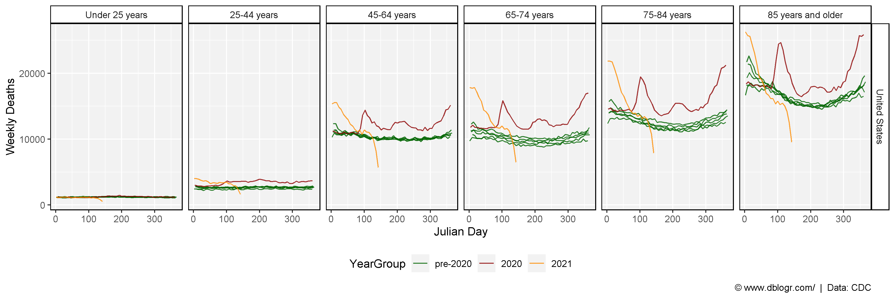
New York
mp <- deathPlot3(area = "New York")
ggsave("usa_deaths_3_02.png", mp, width = 12, height = 4)
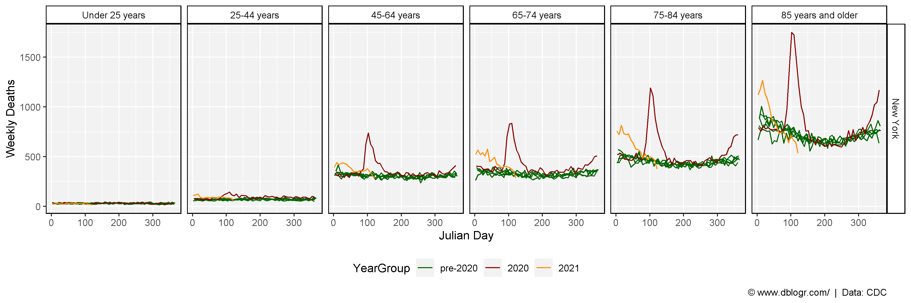
California
mp <- deathPlot3(area = "California")
ggsave("usa_deaths_3_03.png", mp, width = 12, height = 4)
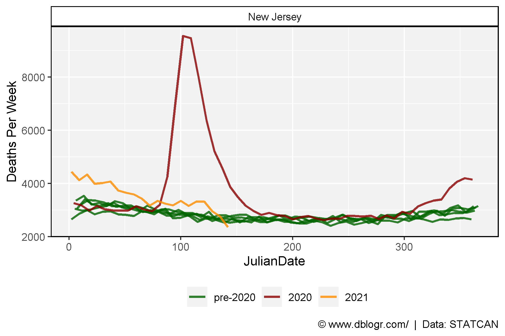
Texas
mp <- deathPlot3(area = "Texas")
ggsave("usa_deaths_3_04.png", mp, width = 12, height = 4)
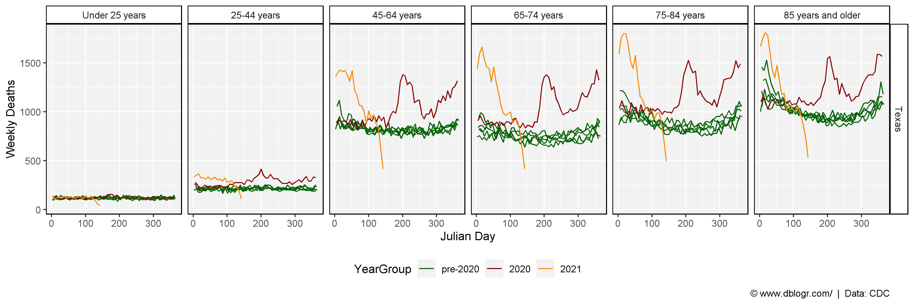
Florida
mp <- deathPlot3(area = "Florida")
ggsave("usa_deaths_3_05.png", mp, width = 12, height = 4)
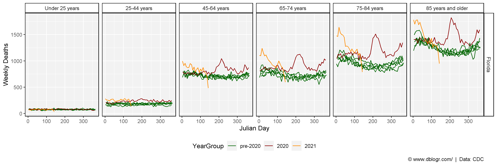
Washington
mp <- deathPlot3(area = "Washington")
ggsave("usa_deaths_3_06.png", mp, width = 12, height = 4)
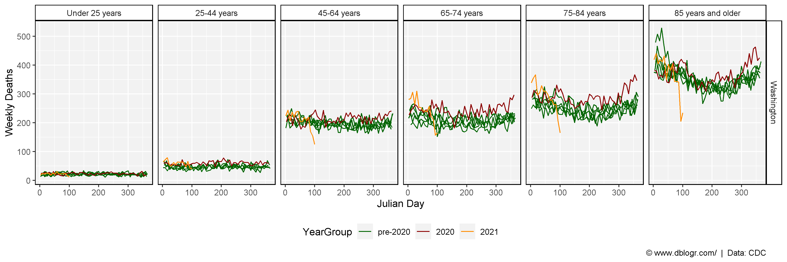
Montana
mp <- deathPlot3(area = "Montana")
ggsave("usa_deaths_3_07.png", mp, width = 12, height = 4)
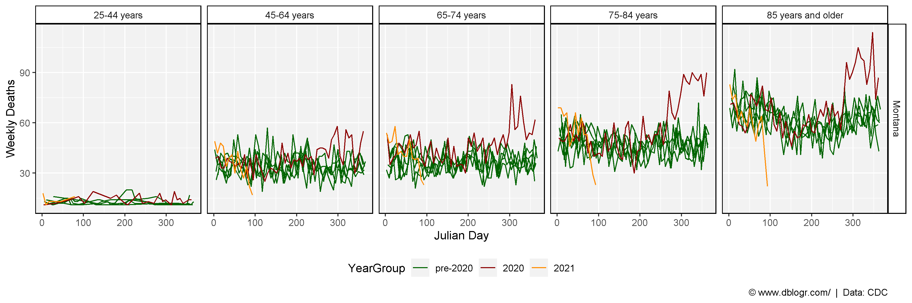
North Dakota
mp <- deathPlot3(area = "North Dakota")
ggsave("usa_deaths_3_08.png", mp, width = 12, height = 4)
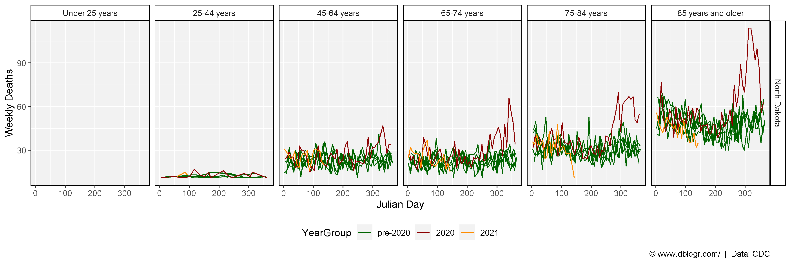
South Dakota
mp <- deathPlot3(area = "South Dakota")
ggsave("usa_deaths_3_09.png", mp, width = 12, height = 4)
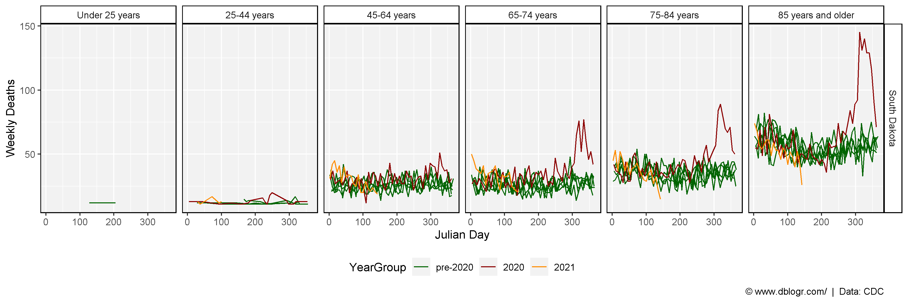
Death Rates
# Prep data
xx <- dd %>%
filter(Year > 2019, Type == "Unweighted") %>%
group_by(Area, State.Abbreviation, Date) %>%
summarise(Number.of.Deaths = sum(Number.of.Deaths, na.rm = T)) %>%
ungroup() %>%
left_join(pp, by = "Area") %>%
mutate(Death.Rate = 1000000 * Number.of.Deaths / Population)
# Plot
mp <- ggplot(xx, aes(x = Date, y = Death.Rate)) +
geom_line(color = "darkred", alpha = 0.8) +
facet_wrap(Area ~ .) +
scale_color_manual(values = agData_Colors) +
theme_agData() +
labs(x = NULL, y = "Deaths per million people per week",
caption = "\xa9 www.dblogr.com/ | Data: CDC")
ggsave("usa_deaths_4_01.png", mp, width = 12, height = 12)

North vs South Dakota
# Prep data
x1 <- xx %>% filter(State.Abbreviation %in% c("SD","ND"))
# Plot
mp <- ggplot(x1, aes(x = Date, y = Death.Rate, color = Area)) +
geom_line() +
scale_color_manual(values = c("darkblue","steelblue")) +
theme_agData(legend.position = "bottom") +
labs(x = NULL, y = "Deaths per million people per week",
caption = "\xa9 www.dblogr.com/ | Data: CDC")
ggsave("usa_deaths_4_02.png", mp, width = 6, height = 4)
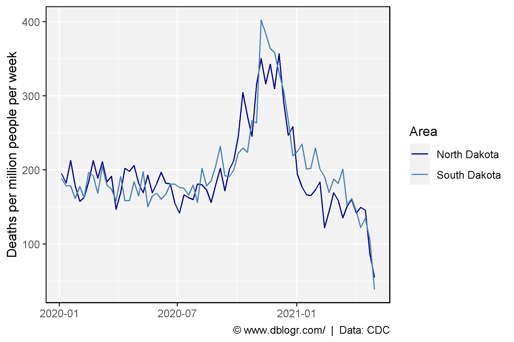
California vs Texas
# Prep data
x1 <- xx %>% filter(State.Abbreviation %in% c("CA","TX"))
# Plot
mp <- ggplot(x1, aes(x = Date, y = Death.Rate, color = Area)) +
geom_line() +
scale_color_manual(values = c("darkred","darkblue")) +
theme_agData(legend.position = "bottom") +
labs(x = NULL, y = "Deaths per million people per week",
caption = "\xa9 www.dblogr.com/ | Data: CDC")
ggsave("usa_deaths_4_03.png", mp, width = 6, height = 4)
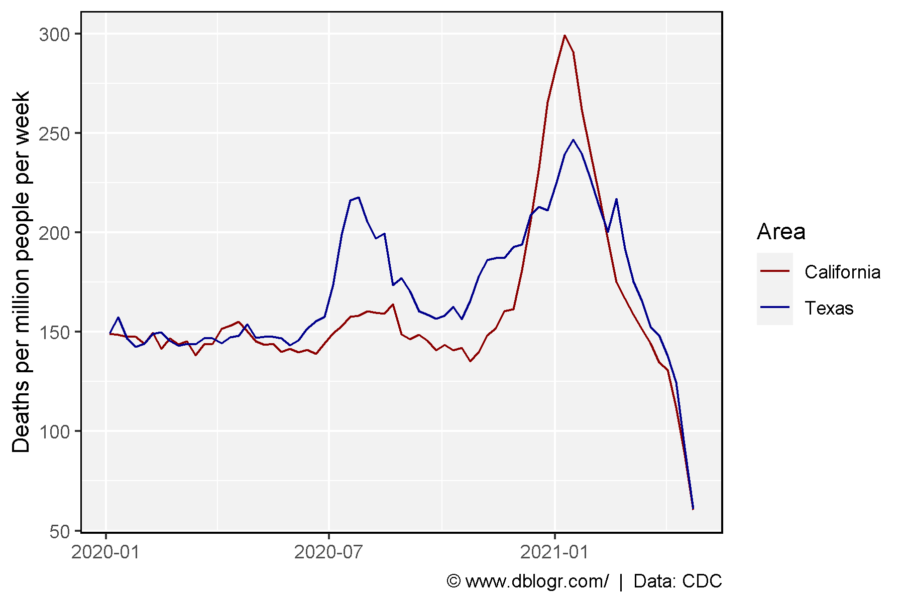
New York vs Florida
# Prep data
x1 <- xx %>% filter(State.Abbreviation %in% c("FL","NY"))
# Plot
mp <- ggplot(x1, aes(x = Date, y = Death.Rate, color = Area)) +
geom_line() +
scale_color_manual(values = c("darkred","darkorange")) +
theme_agData(legend.position = "bottom") +
labs(x = NULL, y = "Deaths per million people per week",
caption = "\xa9 www.dblogr.com/ | Data: CDC")
ggsave("usa_deaths_4_04.png", mp, width = 6, height = 4)
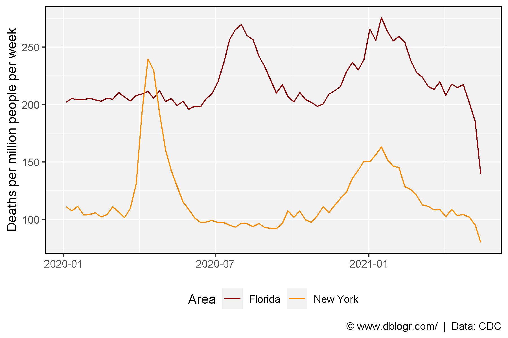
© Derek Michael Wright 2020 www.dblogr.com/